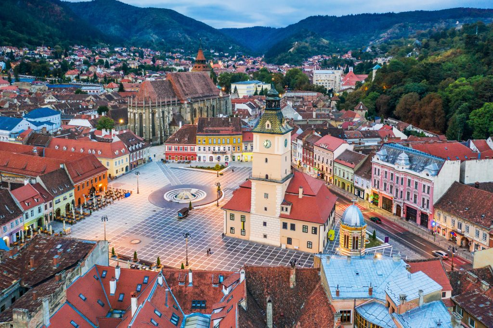
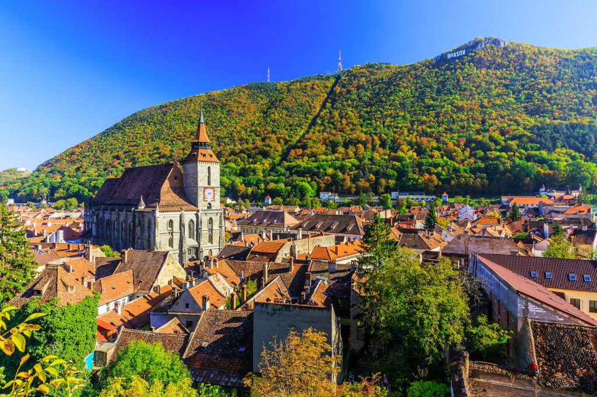
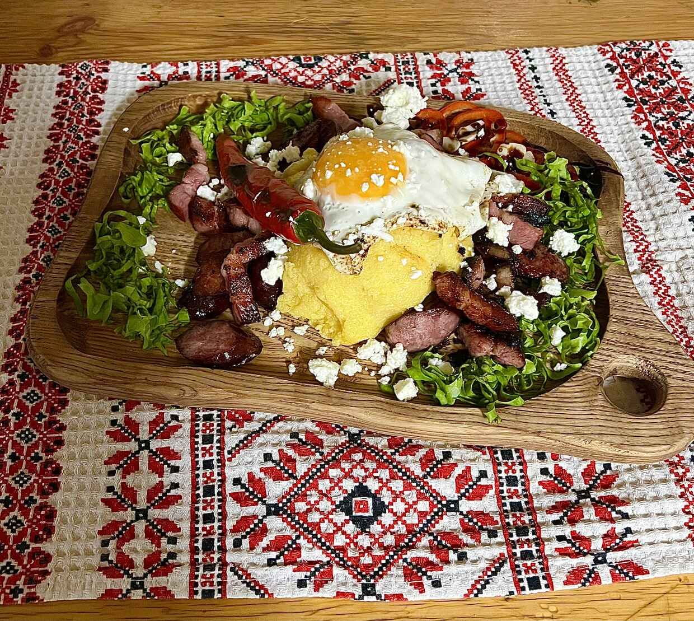
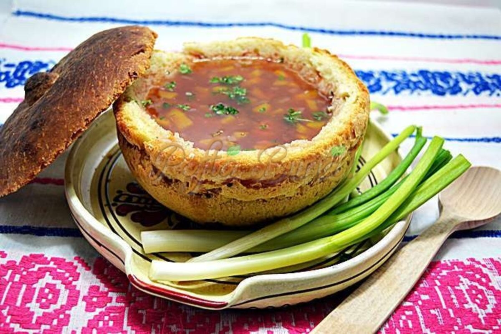

Best Landmarks of Brasov
The Black Church

Council Square

Mount Tampa

There's a distinct magic when Mount Tampa looms into view and the modern world falls away. Walking through Council Square with a warm kürtőskalács in hand, Brasov immediately felt less like a dot on a map and more like a living fairy tale I never wanted to leave.





If you are visiting during the summer, hearing the massive, 4,000-pipe 19th-century organ play inside the Gothic walls of the Black Church is an unforgettable sensory experience. The concerts fill the vaulted stone space with incredible sacred and classical music, allowing you to appreciate the church's history, architecture, and its famous collection of Anatolian carpets in the best way possible.
This is Brașov's most famous and ancient local tradition, taking place annually on the first Sunday after Orthodox Easter. The Junii (young men divided into seven distinct historical groups) dress in gorgeous, heavily embroidered traditional costumes and parade through the historic center on horseback. The procession moves from Council Square up into the Pietrele lui Solomon gorge, featuring traditional dances, rituals, and music that date back centuries to when Romanians were restricted from living inside the Saxon fortress walls.
Just past the medieval Catherine's Gate, you enter the quiet, maze-like neighborhood of Șchei. Historically, this was the old Romanian quarter where locals preserved their identity separate from the German Saxon rulers. In the courtyard of Saint Nicholas Church, you can visit the First Romanian School (Prima Școală Românească). Here, you can sit in a 19th-century classroom, see old printing presses, and look at the first textbooks and Bibles printed in the Romanian language—a core piece of the nation's cultural history.